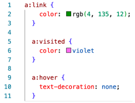

Apostila CSS
CSS
-
CSS-Cascading Style Sheets(Folha de Estilo em Cascata)
-
CSS foi desenvolvido pelo W3C (World Wide Web Consortium) em 1996.
Inserir Estilo
-
Para inserir CSS na sua pagina,uma das formas é adicionando um link para seu css no head do seu HTML
-
Exemplo:
-
<head>
<link rel="stylesheet" type="text/css" href="style.css">
</head>
-
Outra forma é adicionando o CSS no elemento que queira mudar no HTML
-
Exemplo:
-
<h1 style="color:white;margin-left:30px;">Heading</h1>
Seletor
-
Utilizados para estilizar elementos HTML
-
Exemplos de seletores:
-
Elementos:seleciona todos os elementos da pagina
-
Id:seleciona apenas o elemento com o id(utiliza # para selecionar)
-
Class:seleciona todos os elementos com a mesma classe,um elemento pode ter mais de uma classe(utiliza . para selecionar)
-
Exemplos de codigos:
-
p{font-size: 200%;}
-
#paragrafo{text-align: center;}
-
.paragrafo{color: black;}
Cores CSS
RGB
- É possível cirar muitas cores utilizando o RGB(red,green,blue)
- Cada uma desses valores vai de 0 até 255
- Se precisar de transparencia, utilize o RGBA, que ira adicionar transparencia na cor desejada
- Exemplo:
- <h1 style="background-color:rgba(240, 100,50,0.5);">Background RGBA</h1>
HEX
- Tambem é possivel utilizando Hexadecimal(#rrggbb)
- Ou seja,varia de 0 até f
Background
- É possivel tanto colocar cor no fundo, quanto imagens
- Exemplo:
- body{background-image: url("exemplo.jpg");}
- Códigos de background:
- background-attachment: define se a imagem será fixa ou não
- background-color: define a cor de fundo
- background-image: define uma imagem de fundo do elemento
- background-position: define a posição de uma imagem
- background-repeat: define se uma imagem de fundo se repete
Bordas
- Define uma borda para seu elemento
- Propriedades
- dotted: borda pontilhada
- dashed: borda tracejada
- solid: borda solida
- double: borda dupla
- groove: borda 3D groove
- ridge: borda 3D ridge
- inset: borda 3D inset
- outset: borda 3D outset
- none: sem fronteira
- hidden: borda encondida
- É possivel editar partes da borda:
- border-top-style: dotted;
Estado
- É possivel estilizar elementos com base no seu estado
- A imagem abaixo demonstra o css de um link que não visitado será verde,visitado será rosa e com o mouse em cima não haverá decoração

{kind=link}